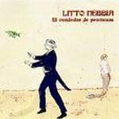

Home Artist links Label link

Litto Nebbia - El Vendedor De Promesas
| Artist: | Litto Nebbia |
| Title: | El Vendedor De Promesas |
| Label: | Viajero Inmovil/Melopea Discos MELO004 VIR |
| Length(s): | 51 minutes |
| Year(s) of release: | 1977/2002 |
| Month of review: | [01/2003] |
Line up
Litto Nebbia - assorted keyboards, vocals
Nestor Astarita - drums, percussion
Jorge Gonzalez - bass
Tracks
| 1) | Obertura | 3.58
|
| 2) | El Vendedor De Promesas I | 5.38
|
| 3) | El Hombre Del Adagio | 9.24
|
| 4) | Final Instrumental | 1.19
|
| 5) | Preludio | 2.07
|
| 6) | Suenos De Ofelia | 12.20
|
| 7) | El Vendedor De Promesas II | 4.12
|
| 8) | Final | 1.22
|
| 9) | Ellos, Los Mares | 3.58
|
| 10) | Manias De Graciela | 2.26
|
| 11) | Limpia Silueta | 3.49
|
Summary
This is a reissue of Litto Nebbia's 1977 solo album, with the addition of three bonus tracks.
The music
This is one of those progressive jazz rock albums as were made in the second half of the seventies. A couple of tracks are pretty much jazzrock, such as opener Obertura and the intermezzos. Most other tracks still use the instruments typical for that style (a lot of Fender Rhodes, with the occasional swelling synth), but also have vocal sections. You could compare this to the music of Mark-Almond, both in their use of music styles, as in the mingling of vocal and jazzrock sections. Added to that are the multiple vocals you often enough hear in Southern progressive music (both European and American). Occasionally Nebbia seems to lose himself into something unclear (it can't be the music, can it?), which doesn't add to the overall effect.
The bonus tracks are, judged from their hissy nature, clearly from an origin different from the original album (which sounds fine, as far as sound quality is concerned). These tracks are less jazzrock oriented, more singer songwriter on the one hand, yet vaguely acoustically Italian progressive of the early seventies on the other.
Conclusion
With this Nebbia made a pretty nice album in the vocal jazzrock style, with a southern touch, along with some bonus stuff in a slightly different vein. Having said that, there were others who are stylistically near, but better: the level of Mark-Almond, for instance, is never approached. El Vendedor De Promesas is nice, but far from essential.
© Roberto Lambooy